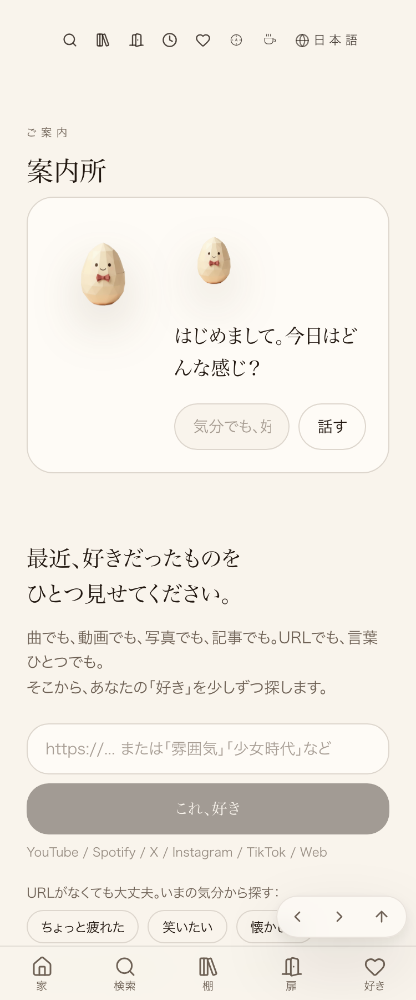
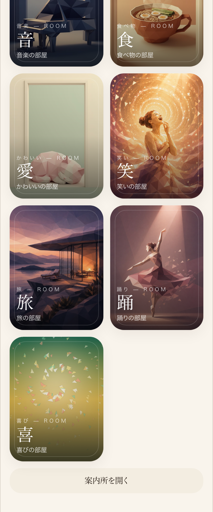

← 進捗表に戻る
共有資料の一覧
／ 確認ページ #800 検品の根本修正：押しても反応しないボタンを機械が見つける
#800 検品の根本修正：押しても反応しないボタンを機械が見つける
2026-09-13 実装・main合流・本番(GitHub Pages)反映まで実測確認
検品AIは今まで「curlで読め・ブラウザは使うな」と命じられ、コンシェルジュの「話す」ボタンが押しても無反応でもHTMLにコードさえあればPASSにしていた。headless Chromeで実際に押せる要素を1つずつクリックする「触る検品」を新設し、機械検品→触る検品→鬼監督(AI検品)の3段を自動でつないだ。3段すべて通ったものだけ次に進む。
② 数字
10件
/cover-guideで無反応と判定した要素数（うち「話す」ボタンを含む）
7件中2件
過去にPASSだったURLを新基準で再検査した結果、FAILに転じた件数（サンプル）
③ 実データでのスクリーンショット
クリック前（案内所トップ）

「話す」ボタンを押した直後（見た目に変化なし＝無反応と機械が判定）

④ 押せるリンク
本番/cover-guide
https://joy-relief-station.lovable.app/cover-guide
検品スクリプト(GitHub)
https://github.com/tamago2022/tamago-shinchoku/blob/main/tools/verify_click.mjs
⑤ 何をどう確かめたか
確認項目
結果
「話す」ボタンの無反応を機械が検出できるか
yes
GitHub Pages確認ページの誤検出（遷移待ち不足）を修正したか
yes
3段検品（機械→触る→鬼監督）がharvest()に接続されているか
yes
鬼監督が実際に動いた記録がoni_kantoku_log.jsonlに残っているか
yes
過去PASSの一部を新基準で再検査し実測したか（全件ではなくサンプル）
yes
← 進捗表に戻る